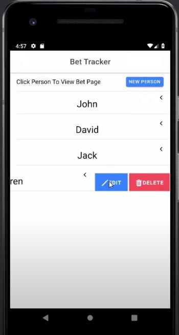
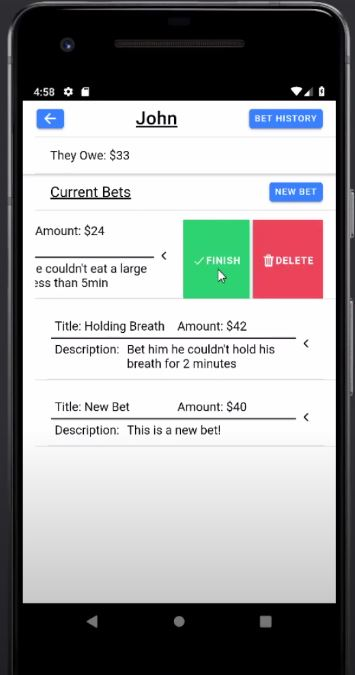
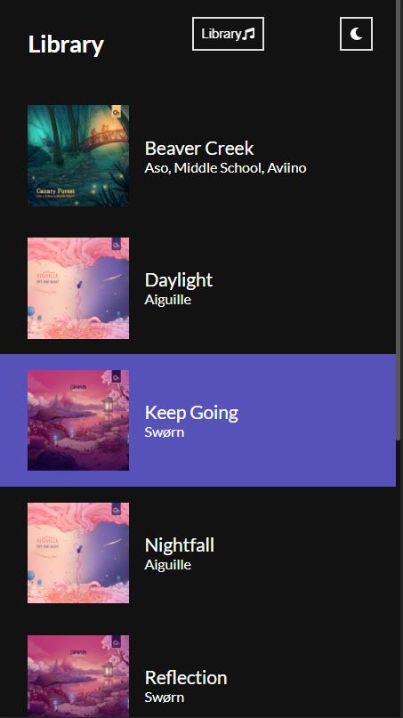
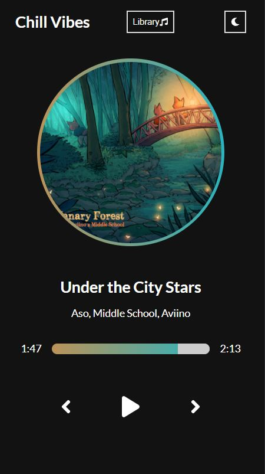
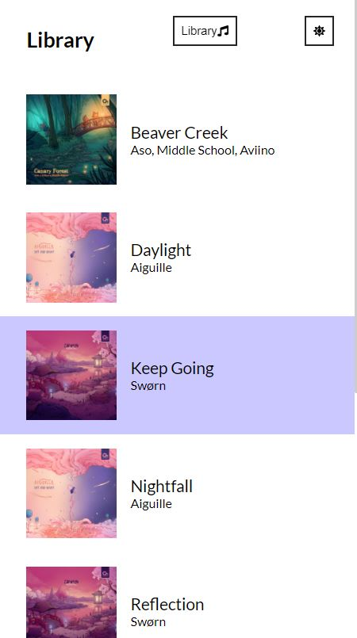
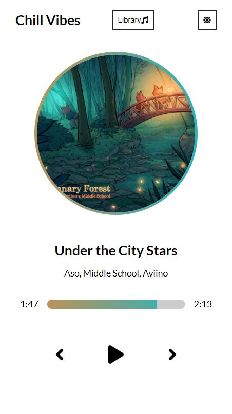

Bet Tracker
Mobile Application using Ionic
Description:
- The purpose of this application is to keep track of what bets you have with people.
- This application was created using Ionic and Angular with persistent data
- Runs on both Android and iOS
Github Link
Video Preview On Emulator
View Live Web Version
[Note: Ionic is made for mobile, this live web version is just for seeing functionality]


Music Player
View Webpage
Description:
- This page allows the user to play songs from the music library
- This page is made using React
The user can:
- Pause and play the current song.
- Skip to the next or previous song in the library
- Open and close the song library
- Switch from light mode and dark mode
- Change the time of the song by dragging on the progress bar
GitHub Link




Risk of Rain 2 Chacter Showcase
View Webpage
Description:
- This is a web page for a character showcase for the game Risk of Rain 2 that allows the user to look at each character and view their abilities and stats, as well as preview their skills in a video.
- This page is written with only HTML, CSS, Javascript/JQuery, and PHP.
- All character data is stored in a JSON file and retrieved using PHP
- All videos were recorded by me.
GitHub Link


Personal Record Tracker
Group project made with Ionic
Group Members: Jessica Murphey, Brett Eckert, and Adrian Atanasov
Description:
- Our app is a simple PR app that allows users to save their Personal Records.
- To use the app you must first register an account and then login. All Personal Records will be saved to that account.
- Users can add, edit, and delete their Personal Records as well as view detailed informaion on their lift percentage.
- In addition because the application is cross platform and uses firebase for data storage the user will have their data be consistent across multiple platforms, such as being able to edit their personal records on both their phone and the web.
Link to Code on GitHub
Link to Report on Github
- I implemented the edit functionality for the personal records and added the edit personal record form page.
- I added the swipe functionality to the home page PR items so that the user can swipe to the left to open up buttons to select edit or delete for that personal record.
- I helped format the look of the user interface using ionic components and css/scss to make the UI look more professional.